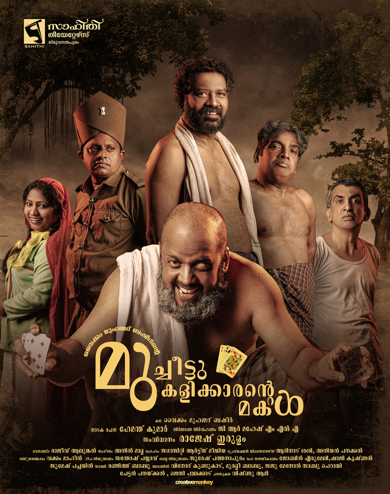

Author: സാഹിതി തീയേറ്റേഴ്സ്, തിരുവനന്തപുരം
Review by: സക്കറിയാസ് കെ ജെ

ഇന്നലെ പരപ്പ പള്ളി ഗ്രൗണ്ടിൽ വച്ച് തിരുവനന്തപുരം സാഹിതി തിയേറ്റേഴ്സിൻ്റെ 'മുച്ചീട്ടു കളിക്കാരൻ്റെ മകളെ' കണ്ടു.
പ്രൊഫഷണൽ നാടകങ്ങളുടെ മനം മടുപ്പിക്കുന്ന പതിവു ശൈലിയിൽ നിന്നും മാറി നടക്കാൻ ആത്മാർത്ഥമായും ശ്രമിച്ചൊരു നാടകം.
പ്രത്യേകിച്ച് സുപരിചിതമായ ഒരു നോവലിന് നാടക ഭാഷ്യം ചമയ്ക്കുമ്പോൾ പരിധികളും പരിമിതികളും വെല്ലുവിളികളും ഏറെയുണ്ടല്ലോ.
നോവലിൻ്റെ തരക്കേടില്ലാത്ത ഒരു നാടകവായനയാണ് രംഗത്തുകണ്ടത്.
ബഷീർ ഭാഷയുടെ നാട്ടുമൊഴിചന്തവും അതിസാധാരണത്വവും നാടക സംഭാഷണത്തിലുമുൾച്ചേർത് കാണികളുടെ നല്ല പ്രതികരണത്തിന്, കയ്യടിക്ക് കാരണമായി.
നടന്മാരെല്ലാം തന്നെ മികച്ച അഭിനയമാണ് കാഴ്ചവച്ചത്.
ഒറ്റക്കണ്ണൻ പോക്കറെ അവതരിപ്പിച്ച നടൻ (പേരറിയില്ല) തൻ്റെ അത്യുജ്ജ്വലമായ പ്രകടനത്തിലൂടെ കാണികളെ മുഴുവൻ കയ്യിലെടുത്തു.
കഥാപാത്രവുമായി അത്രമേൽ താദാത്മ്യപ്പെട്ടാണ് അദ്ദേഹം അഭിനയിച്ചത്.
അനായാസമായ ഒരു വഴക്കം ആ ശരീരഭാഷയിലും അസാധാരണമായൊരു വശ്യത ആ ഡയലോഗ് പ്രസൻ്റേഷനിലും ഉണ്ടായിരുന്നു.
ആ ശബ്ദ നിയന്ത്രണവും അതിനനുസരണമായ ഭാവഹാവാദികളും നമ്മെ തെല്ലൊന്നുമല്ല ആഹ്ലാദിപ്പിക്കുക.
ഒരു നടിയേ ഉണ്ടായിരുന്നുള്ളു. എന്നാൽ ബഷീറിൻ്റെ സൈനബയ്ക്കു ചേർന്ന "നിസർഗ്ഗ ലാവണ്യം" അവർക്കില്ലാതെ പോയി. പോരാത്തതിന് കൂടുതൽ പ്രായവും തോന്നിച്ചു.
പശ്ചാത്തല സംഗീതവും, ദീപവിതാനവും മികച്ചതുതന്നെ.
പൊതുവേ അഭിനയത്തിൻ്റെ ഉജ്ജ്വലമുഹൂർത്തങ്ങൾ സമ്മാനിച്ച ഭേദപ്പെട്ടൊരു നാടകം.